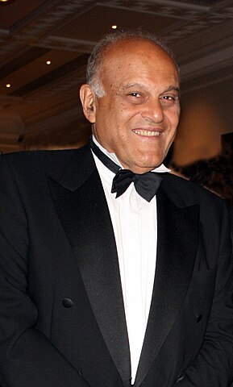
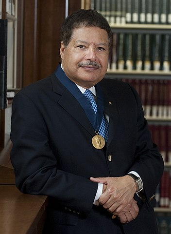
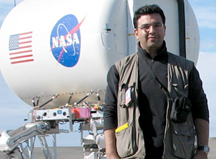

|  |
Magdi Habib Yacoub was born on the 16th of November in 1935 in Bilbeis, El Sharqia, Egypt to a Coptic Christian family, and spent his childhood moving around a number of different small towns.His father was a surgeon, who later worked in public health. He died in 1958. Yacoub later recalled that both his father and the death of his youngest aunt at age 22 years from an uncorrected mitral stenosis during childbirth inspired him to study medicine and cardiology, saying that “this young woman would not have died if we had had access to facilities which were then available in a few centres around the world”.See more ... |
|  |
Ahmed Hassan Zewail (February 26, 1946 August 2, 2016) was an Egyptian-American chemist, known as the "father of femtochemistry". He was awarded the 1999 Nobel Prize in Chemistry for his work on femtochemistry and became the first Egyptian and Arab to win a Nobel Prize in a scientific field, and the second African to win a Nobel Prize in Chemistry. He was the Linus Pauling Chair Professor of Chemistry, a professor of physics, and the director of the Physical Biology Center for Ultrafast Science and Technology at the California Institute of Technology. See more ... |
|  |
Essam Heggy was born in 1975 in the city of Tripoli in Libya to an Egyptian family; his father is the Egyptian artist Mohamed Heggy. He was raised in Tunisia, Egypt and France in a family passionate about art in a multicultural environment. Heggy's position on the reform of the educational system in Egypt to support a real transition toward a modern, tolerant and democratic society have been subject to several public discussions after the major changes that followed the Egyptian Revolution of 2011. Heggy is a known public figure among Egyptian youth; he served as the Egyptian president advisor for scientific affairs from 2013 to 2014.See more ... |